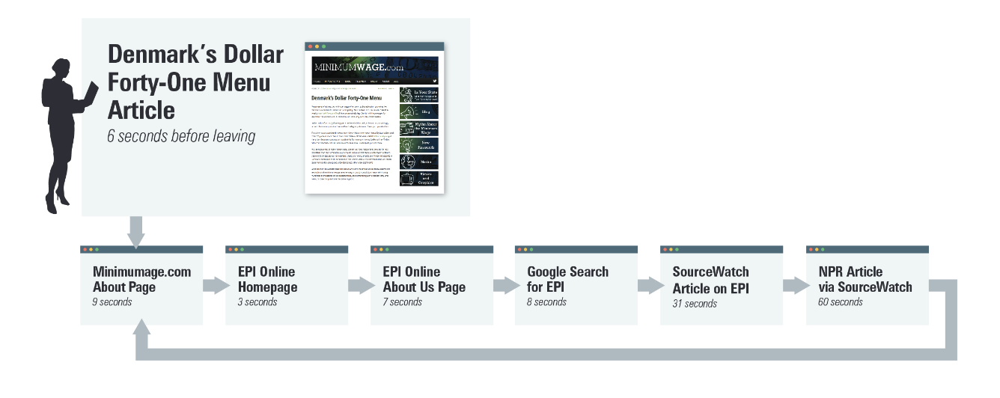
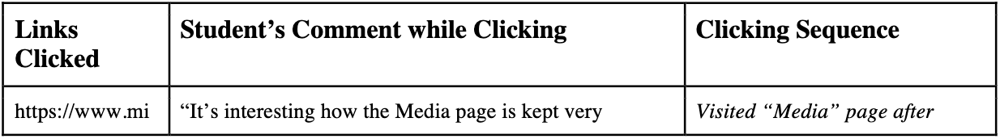
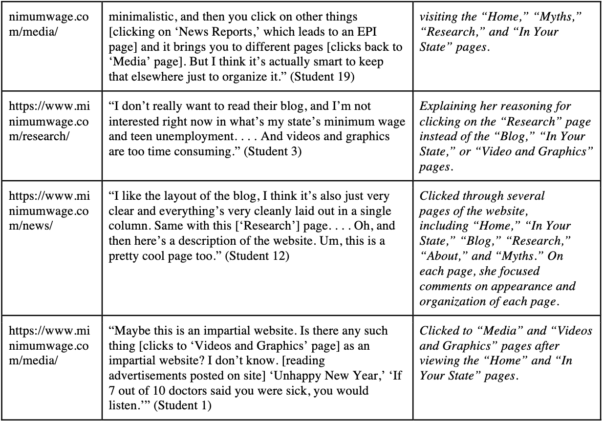

先说在前面：这套做法对我有用，未必适合每个人，希望能给你一点启发。
上次跟朋友闲聊，他抱怨说：“总是想要尝试脱离自己的信息茧房，但社交媒体和应用上的信噪比又太低，难以持续获得良好的体验。我不时能在网络上找到一些好的议题和解决方案，但真正遇到一个问题的时候，大多数情况都无功而返。”他问我：“你能讲讲一些好的信息源渠道或者建议吗？”我之前同大多数人一样，没有考虑过这种情况的解决办法。这也是我最近在网上搜寻各种资料，最终写下一些自己的拙见的原因了。
先别急着读，看看是谁在说
面对一篇看起来很专业的文章，我们很容易先被它的排版、机构名称和参考文献说服。但认真读完，并不一定就能看出问题。
斯坦福历史教育研究组在 2017 年发布过一项研究（后来于 2019 年正式发表）[1]，比较事实核查员、历史学家和斯坦福本科生判断网络信息可信度的表现。结果有点反直觉：事实核查员读得更少，却判断得更快、更准。许多历史学家和学生会受到代表性启发式的影响，容易根据网站是否具有专业的外观、机构名称或参考文献来判断它是否可信。一个关键区别在于，事实核查员会很快离开原网站，到其他地方查它的背景，也就是“横向阅读”。历史学家和学生则更常留在网站内部，仔细读文章、看引用和“about us”页面，即“纵向阅读”。[2]
这里给出了研究中的一个具体示例：
判断网站 minimumwage.com 的可信度。该网站表面上由“无党派、非营利研究机构”就业政策研究所（EPI）支持，但实际上 EPI 和 minimumwage.com 都与代表餐饮、酒店行业利益的公关公司伯曼公司有关。
事实核查员采用横向阅读：很快离开原网站，打开多个标签页，通过 Google、SourceWatch、新闻报道等第三方来源调查网站和 EPI。较少阅读网站自身内容，并主动交叉验证信息。

历史学家更多依赖传统的深入/垂直阅读，仔细检查网站文章、研究和“关于”页面；部分人尝试横向搜索，但搜索技巧较弱，如关键词选择不佳、不会有效使用引号和限定词。
学生多数停留在网站内部进行垂直阅读或随意浏览，点击地图、统计数据等吸引注意力的功能，而不是主动调查网站背后的组织和资金来源；缺乏明确的信息验证策略。


对我来说，这个方法最实用的地方，是提醒自己先弄清楚眼前的任务：我想了解的是“谁在说”，还是“这句话对不对”？前者可以搜索作者和机构，看看它们的背景、专业经验和可能涉及的利益；后者则要沿着具体主张找证据。遇到一段被截取的发言，最好找到完整对话；看到转述的数据，就继续找原始报告。Mike Caulfield 提出的 SIFT 方法也强调这些动作：先停一下，调查来源，寻找更好的报道，再把主张、引文和图片放回原始语境。[3]
不过，多开几个标签页还不够。如果十篇报道都在转述同一份新闻稿，证据其实并没有变成十份。交叉核验时，还得看看它们有没有各自的采访、数据或原始材料。
换着来源读，也不只是为了辨别真假。有些内容当时读不懂，可能只是缺少背景。Tyler Cowen 在谈阅读时提到，他会围绕同一主题读几本不同的书，再回头重读；有了新的上下文，原先不明白的地方才逐渐连起来。[4] 我觉得这比盯着同一篇文章反复啃，更值得一试。
什么样的信息源值得留下
一个真正好的优质信源会主动告诉你它可能错在哪里，可能在某些具体的假设条件下才适用，如果只展示支持自己的材料，往往比较危险。[5] Feynman 原本针对科学研究提出这一要求。我认为，它也可以作为评价一般信息源的启发式标准：一个来源是否主动说明证据边界、反例、利益冲突和可能出错的条件？
当然，一个来源不必什么都擅长。社交媒体适合发现新话题，专业博客、Newsletter 和播客能补充背景，论文、官方文件和数据则方便追溯证据。综述有助于了解一个领域的大致情况，但可能跟不上最新进展；单篇论文离研究更近，也不能直接当成整个领域的共识。我更愿意把它们搭配着用，碰到重要问题时，再沿着线索往下查。
还有一个容易忽略的标准：它占用了我多少时间？Herbert Simon 早就指出，丰富的信息会带来注意力的匮乏，信息系统也需要帮助人吸收、过滤和压缩内容。[6] 一个每天发几十条、偶尔才有一条值得看的账号，对我来说可能不如一个更新少、但经常有收获的博客。
我大概会用一个这样公式表达：
信源价值 ≈ 相关性 × 证据质量 × 独特性 × 纠错能力 ÷ 注意力成本
用 RSS 整理自己的订阅
互联网普及后，我们一直身处在信息爆炸的社会中。网络上充斥着大量的信息垃圾，社交媒体靠着推荐算法消耗了我们大量的时间。（不能否认推荐算法能有助于我们节约时间，快速发现更多自己感兴趣的内容。但大多数人很容易陷入被毫无意义的推荐内容浪费了时间却还浑然不知的处境。）“我感觉每天摄入了太多我根本不关心的信息，或者就是被一些负面情绪影响。”这困扰着我、我的朋友，也包括大多数人。“我安装了很多 app，关注不同的博主。打开通知后的各种推送也让人心烦。”
RSS（简易资讯聚合）在web 1.0时代出现，在2000年那段以博客互联网为概念的时间里，这种形式成为了一种主流信息整理手段。[7][8] Web2.0的中心化社交网络，而导致RSS逐渐没落。幸运的是，现在仍有大多数网站能够使用，或者转化为RSS协议适配的形式，从而达到摆脱平台个性化算法和隐私泄漏风险的个性化服务。[9]
阅读器有不少选择，比如 Feedly、Inoreader，以及我目前用的 Folo；也可以看看 Feedbro 和 Reeder。这里就不排推荐榜了，界面看着舒服、操作顺手，比功能表有多长更影响我能不能一直用下去。
找订阅源时，可以先搜“网站或出版物名称 + RSS”，也可以翻翻喜欢的作者分享的订阅列表。没有现成订阅地址的，再去 RSS.app 或 Feedspot 找找有没有可用的替代源。Gabriel Weinberg 分享过自己的做法：把高赞信息流作为一种输入，再搭配专业出版物、播客、Newsletter 和熟人推荐。[10] 这个思路可以参考，但高赞只是发现内容的线索，不能直接当作质量认证。
我不太建议一上来就导入几百个订阅。先想想最近在关心什么、想解决什么问题，再找几个相关来源，读一阵子就知道还缺什么。也不必把所有订阅都弄得很“有用”，留几个兴趣博客、偶尔看看朋友分享，反而更像平时会愿意打开的阅读列表。
订阅之后，不必篇篇都读
RSS 能把信息收进来，但读多少、多久读一次，还得自己拿主意。每允许一个来源发送通知，就相当于给了它随时打断我的机会。[11] 我会把即时提醒留给那些错过后真可能影响工作或决策的信息，其余的等有空再看。比如新闻和项目动态，可以每天集中扫一遍。专业分析、Newsletter 和研究摘要，攒到每周看也没关系。长报告、理论文章就留到有时间时慢慢读。有些资料只在遇到具体问题时才用得上，临时搜索就好，没必要让它一直待在订阅列表里。对方更新得快，不代表我也得跟着看得快。
真正麻烦的往往是越订越多。原本想摆脱信息流，结果只是把它搬进了 RSS：同一条消息换着标题出现，未读数字越攒越大，“稍后阅读”里也全是再没打开过的文章。到了这一步，我会先清理来源，而不是催自己读得更快。新发现的作者可以先观察一阵，长期关注的也偶尔翻翻最近二十条内容：有几条真的值得读？是不是总在重复别人的消息？有没有原始链接，出错后会不会更正？如果已经越来越依赖标题党、情绪或推广，取消订阅也没什么可惜的。至于已经积压的内容，必要时直接全部标为已读就好，我希望打开阅读器时是“看看有什么想读的”，而不是“又欠了多少没读”（少给自己一点信息压力）。
自己选，也会有盲区
回到朋友最初提到的信息茧房，RSS 也不能自动解决它。选择权回到自己手里之后，如果只关注那些让我点头的人，久而久之，看到的还是同一套看法。这种倾向在研究中通常被称为“选择性接触”：人们整体上更偏向选择与既有态度一致的信息。[12][13] 而且因为早就信任这些作者，我可能连核验都懒得做了。
所以，对真正关心的主题，我希望能保留一些提出有效反例的来源。不用为了平衡硬找一个立场相反的人，更值得看的是那些能补上遗漏的证据、指出假设问题，或者给出另一种解释的材料。偶尔跳出订阅列表，主动搜搜不熟悉的作者，也能给阅读添一点新东西。
AI 摘要则是另一种容易让人省过头的地方。我愿意用它快速判断一篇文章是否值得打开，但涉及重要数字、引文或争议性结论时，还是会回原文看看。摘要可能留下结论，却省掉“可能”“相关”或者“只在这个样本中成立”这些限定。至少在论文摘要中，已有研究发现，LLM 会删去保留语，甚至把相关性表述放大为因果结论。[14] 而这些限定，恰好会影响我们怎么理解一件事。
折腾这些，最后还是想让每天的阅读轻松一点：该知道的事能找到，感兴趣的东西有得看，其余的安心错过。订阅列表也不用一次配齐，读着读着，觉得谁值得留下就留下，发现不合适再换。它能跟着自己的生活慢慢调整，就已经很好了。
我希望未来能够创建一个讨论空间，供大家整理交流自己的信息源。
参考文献
- Sam Wineburg、Sarah McGrew：Lateral Reading and the Nature of Expertise: Reading Less and Learning More When Evaluating Digital Information、中文翻译 ↩
- Carrie Spector：Stanford Scholars Observe “Experts” to See How They Evaluate the Credibility of Information Online ↩
- Mike Caulfield：SIFT (The Four Moves) ↩
- EconTalk：Tyler Cowen on Reading ↩
- Richard Feynman：Cargo Cult Science ↩
- Herbert Simon：Designing Organizations for an Information-Rich World ↩
- RSS Advisory Board：RSS 2.0 Specification ↩
- RSS Advisory Board：RSS Specification History ↩
- RSS简史：Web1.0/2.0/3.0时代的RSS产品进化 ↩
- Gabriel Weinberg：One Approach to a Heavily Curated Information Diet ↩
- Cary Stothart、Ainsley Mitchum、Courtney Yehnert：The Attentional Cost of Receiving a Cell Phone Notification ↩
- William Hart 等：Feeling Validated Versus Being Correct: A Meta-Analysis of Selective Exposure to Information ↩
- Eytan Bakshy、Solomon Messing、Lada Adamic：Exposure to Ideologically Diverse News and Opinion on Facebook ↩
- Calvin Isch 等：Quantifying the Prevalence and Impact of Overreaching Causal Claims in Social Science ↩